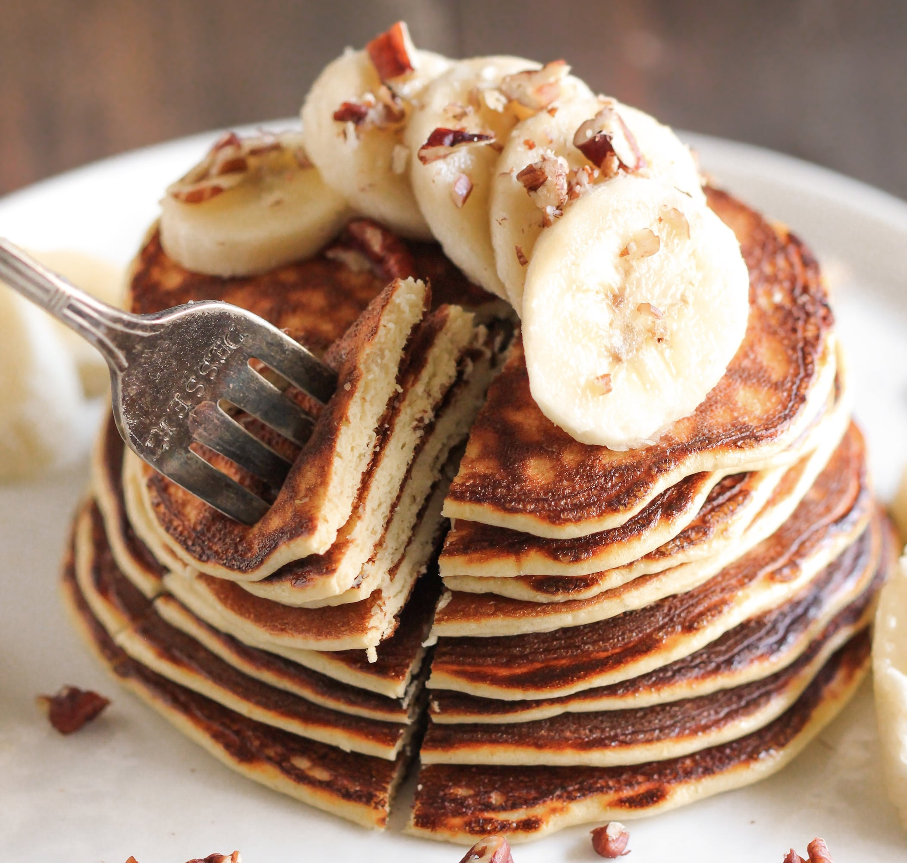

Protein Pancakes

Healthy recipe for protein pancakes
This recipe is a personal favorite of mine and will help you diversify your repertoire of breakfast recipes.
Ingredients
- 3 Eggs
- 1.5 Cups of oats
- 1 teaspoon of baking soda
- 150 grams of greek yogurt
- 50 - 100 ml of milk
- 1 banana
- Agave syrup
Steps
- Mix ingredients in blender or by hand (leave out the fruit and syrup)
- Spray heated pan (low - medium heat) with cooking oil
- Pour first batch (you should be able to easily flip the pancake with a spatula)
- Stack pancakes
- Cut banana and place the pieces on top of the stack of pancakes
- Cover with agave syrup
- Enjoy!